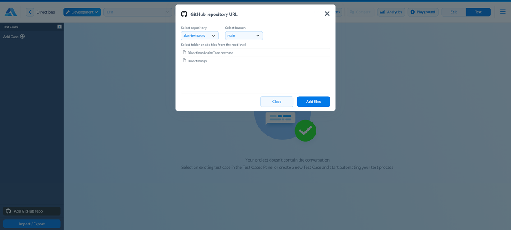
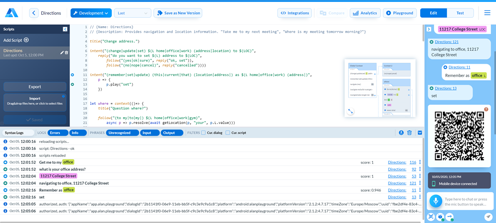

Script testing¶
After you have built a voice script, you need to make sure the conversation flow covers all usage scenarios, correct replies are given and the necessary actions are carried out when the user gives voice commands. Alan provides a set of tools to test voice scripts:
Debugging Chat¶
To the right of the code editor in Alan Studio, you can see the Debugging Chat. You can use this chat to test the script you create, either by giving voice commands or typing them.
To test a command with voice, in the Debugging Chat, click the Alan button and say the command.
To test a command by typing it, in the text area of the Debugging Chat, type the command text and click the Send button or press ENTER on the keyboard.
In the Debugging Chat, commands and responses are displayed as bubbles. Every bubble is titled with the name of the voice script to which the command or response belongs and the number of the row in the voice script. To go to the corresponding code block in the code editor, click the link at the top of the bubble.
To let you quickly grasp how commands are built, the Debugging Chat displays slots in the user input as colored blocks. For example, if a command includes a slot and you say or enter the slot value, the Debugging Chat will display a block containing the slot value and name.
When you test a voice script in the Debugging Chat, you emulate the user’s interaction with your voice assistant. However, in some cases, giving commands may not be enough, and the Debugging Chat will fail to process commands in a proper way. This can happen, in particular, if the script requires some data from the app side.
To work around such issues, the Debugging Chat allows you to:
Setting authentication data¶
If your application requires the user to authenticate to interact with it, you can set authentication data in the Debugging Chat. As a result, you will be able to run voice commands as if the user has logged in to the system.
To set authentication data, at the bottom left of the Debugging Chat, click the Set Auth Data button and enter the authentication data as JSON or a string, for example:
{
"token": "demo",
"baseUrl": "https://mysite",
"deviceId": "1234-5678-9001",
"userName": "demo"
}
Setting the visual state¶
The Set visual state option allows you to emulate the situation when your app passes the visual state to the script. As a result, commands that require the visual state will be processed as expected.
To set the visual state, at the bottom left of the Debugging Chat, click the Set Visual State button and enter the visual state as JSON. For example, if some commands in your script can be run only on specific app screens, you can specify the visual state in the following way:
{"screen": "Products"}
After that, you will be able to test all commands that require the {"screen": "Products"} visual state.
Tip
The Debugging Chat keeps the history of visual states set during the current session. While testing your dialog, you can set several visual states and switch between them when needed.
Connecting from a mobile device¶
You can check how your voice script works using a mobile device. To do this, you need to connect to the script from the Alan Playground and give voice commands as if you are an app user. The given commands and replies will be sent to the Debugging Chat, and you will be able to review the results of voice commands execution in a convenient way.
Note
To be able to test a voice script using a mobile device, you must have the Alan Playground installed on the device. For details, see Alan Playground.
To test how your script works using a mobile device:
At the bottom left of the Debugging Chat, click the QR code button. The QR code will be sent to the chat.
On your mobile device, open the Alan Playground.
Tap the Scan QR Code button and scan the QR code in the Debugging Chat with the device camera. The ‘Mobile device connected’ message will be sent to the Debugging Chat.
In the bottom right corner of your app on the mobile device, tap the Alan button and give voice commands.

Test View¶
The Debugging Chat in Alan Studio is helpful for checking separate voice commands and verifying how short dialog branches work. For more comprehensive dialog testing, you can switch to Alan’s Test View.
The Test View allows you to follow the Test Driven Development (TDD) approach to the dialog development. You can create test cases and repeatedly run them against new versions of the voice script. This way, you can quickly validate your dialog and make sure all requirements to the conversational flow are met.
To test a voice script in the Test View:
In the top right corner of the code editor, click Test.
In the left pane, click Add Case, specify the test case name and click OK.
In the Dialog box, create a dialog branch you want to test:
Enter voice commands that the user will give while following the dialog branch. You can type the commands or click the microphone icon and say them, just like in the Debugging Chat.
To validate Alan’s responses, at the top of the view, set the Show Expected Responses toggle to the On position. Then hover over a voice command in the branch and click the Add expected response icon. In the box below, enter one or more phrases with which Alan must reply.
To set the visual state for the dialog branch or a specific command, click the Set visual state icon and enter the visual state as JSON. For details, see Setting the visual state.
To test the dialog branch in Alan Playground, click Scan QR and scan the code with your mobile device. For details, see Connecting from a mobile device.
To add another dialog branch, click the plus icon to the right of the Dialog box or at the top of the view. Then create the branch as described above.
Once your test case is set up, at the top of the view, click Run all. Alan will run the test case against the current version of the voice script and mark the dialog branches as successfully passed or failed.
Note
To show links to code lines in the voice script, set the Show source links toggle to the On position.
Alan allows you to easily save and share the created test cases. You can:
Export and import test cases to save and copy them between projects
Save test cases to GitHub to share them with other team members
Exporting and importing test cases¶
To save a test case for later or transfer it to another project on your account, use the Import/Export option in Alan Studio.
In the bottom left corner of the Test View, click Import/Export.
In the top right corner, click Copy to copy the raw test case data and save it in a file.
To import a test case to an Alan Studio project, in the Test View, click Import/Export, paste the copied data and click Apply Changes.
Note
If a test case with the same name already exists in your project, Alan will replace the existing test case with the imported one.
Saving test cases to GitHub¶
You can integrate your voice assistant project with GitHub and store the created test cases in a GitHub repository, just like voice script files. This option can be helpful, for example, if you want to share test cases with other team members working on your voice assistant. For details, see Sharing and keeping scripts in GitHub.
Voice scripts and test cases are saved to the same target. Once you synchronize with GitHub, Alan pulls the content from the selected repository and branch and adds it to your project:
Voice script files (JS) are added to the code editor
Test case files (TESTCASE) are added to the Test View
When you push the changes to GitHub, Alan pushes both changes made to voice scripts and test cases. In case of a conflict, Alan will prompt you to sequentially resolve conflicts for voice scripts and test cases.
Alan Studio logs¶
To check how your voice script operates, you can use logs in Alan Studio. Alan logs the following types of events:
System logs: system messages from Alan Studio
Syntax logs: information about errors in voice scripts
Phrases logs: information about conversation messages in the dialog session
To open the log panel in Alan Studio, at the bottom of the code editor, click the up icon.
To get information about a specific type of command, dialog or script, filter conversation messages using filter options at the top of the logs panel. You can also export logs to a CSV file or clear logs for the dialog session.
Logging messages to the console¶
In Alan Studio, you can use the console.log() function to debug your scripts. console.log() writes messages to the logs section so that you can see the output you need without affecting your users.
To use console.log, add this function to the necessary line in the script:
intent('I want $(NUMBER) $(FOOD burger_|pizza_|wing_) and $(NUMBER) $(FOOD burger_|pizza_|wing_)', p => {
console.log('Numbers array:', p.NUMBER_);
console.log('Food array:', p.FOOD_);
p.play(`Your order is: ${p.NUMBER_[0].number} ${p.FOOD_[0].value} and ${p.NUMBER_[1].number} ${p.FOOD_[1].value}`);
});
To see the logged message, open the logs section, make sure the Info filter is on and hover over the necessary line in the logs.